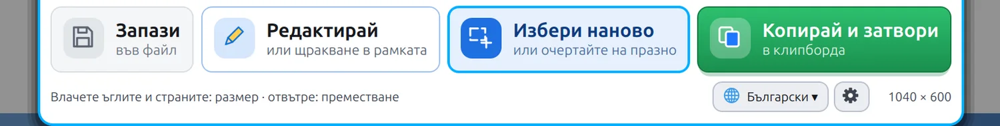
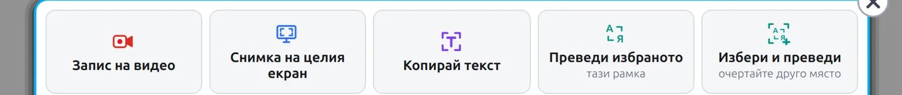
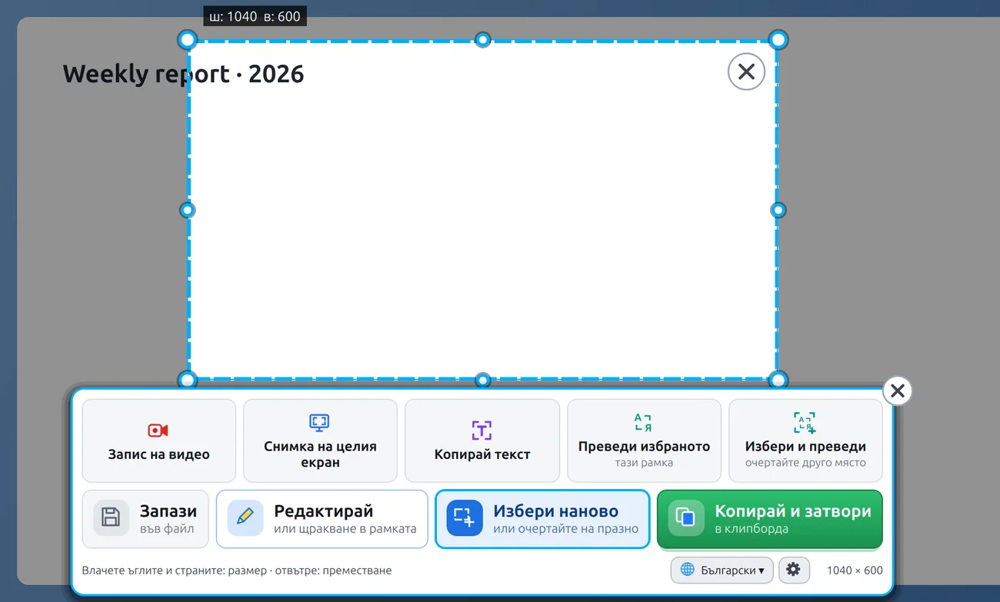
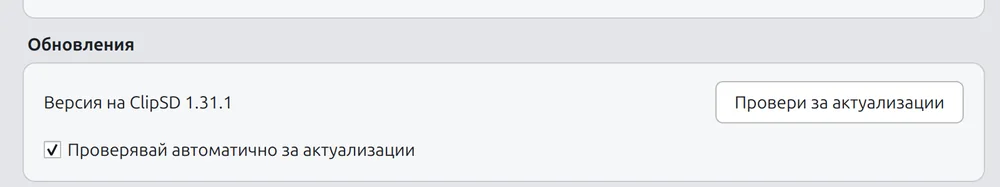
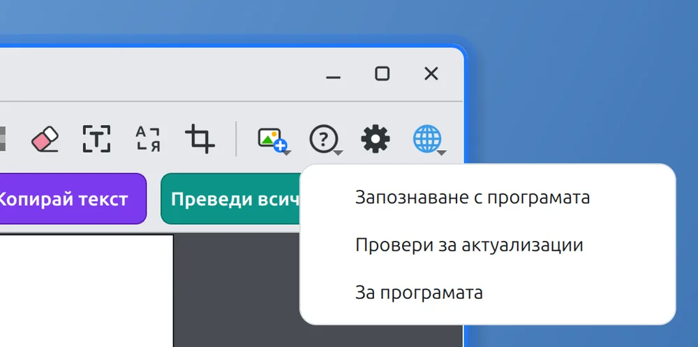
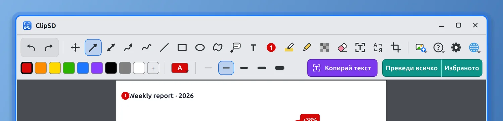
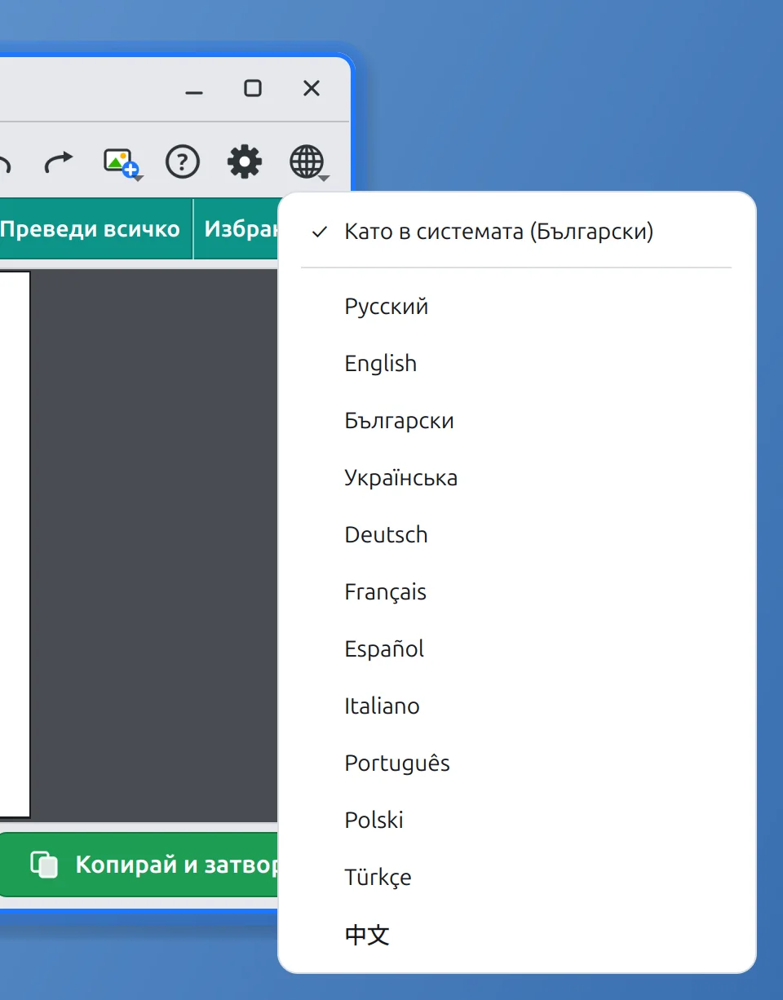
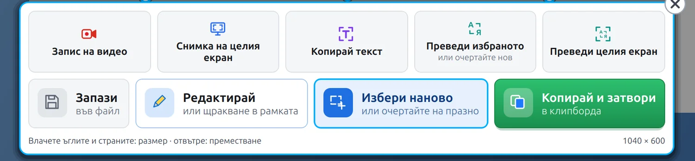
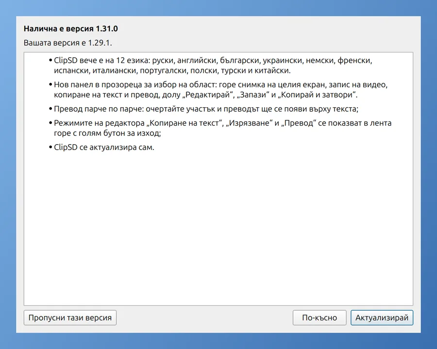

История на версиите
Версия 1.31.2
излезе на
- Linux: актуализацията отново се инсталира сама на по-новите системи (например Ubuntu 26.04). Преди тя се изтегляше, но не се инсталираше.
- Linux: на по-новите системи отново работят разпознаването на текст, връзките и автоматичното стартиране.
- Ако актуализацията не се инсталира, ще се появи прозорец с бутоните «Опитай отново» и «Доклад за грешка». Докладът не съдържа потребителското име и пътища към лични папки.
- След актуализацията прозорецът «Какво е новото» започва с реда «Актуализацията е инсталирана».
Версия 1.31.1
излезе на
- В прозореца за избор на област вече можете веднага да смените езика и да отворите настройките: най-долу в панела, вляво от размера, има глобус с името на езика и зъбно колело.

- Преводът е разделен на два бутона: «Преведи избраното» превежда рамката, която вече стои, а «Избери и преведи» ви дава да очертаете друго място. Превеждането на целия екран е в реда на режима за превод, бутон «Целият екран».

- Панелът в прозореца за избор е приблизително с 15% по-компактен и застава до рамката, а не върху нея: под, над, вдясно или вляво. Вътре в рамката отива само ако отвън няма място.

- В настройките има нов раздел «Обновления»: версия, бутон «Провери за актуализации» и отметка за автоматична проверка. Бутонът «?» в редактора вече отваря меню: «Запознаване с програмата», «Провери за актуализации», «За програмата».


- В редактора «Отмяна» и «Повторение» са в началото на реда върху собствена подложка. По подразбиране инструментите са подредени така: преместване, стрелките заедно, после фигурите, после останалите. Подредбата, която сте задали сами, не се променя.

- Иконата с глобус е навсякъде синя и се намира по-лесно.
- Linux: поправена е първата инсталация, която преди можеше да спре тихо по средата.


Версия 1.31.0
излезе на
- ClipSD вече е на 12 езика: руски, английски, български, украински, немски, френски, испански, италиански, португалски, полски, турски и китайски. Езикът се сменя веднага, без рестарт: менюто на иконата до часовника, глобусът в редактора, първата стъпка от запознаването или настройките.

- Нов панел в прозореца за избор на област: горе снимка на целия екран, запис на видео, копиране на текст и превод, долу „Редактирай“, „Запази“ и „Копирай и затвори“.

- Превод парче по парче: очертайте участък и преводът ще се появи върху текста; очертайте следващия и той също ще бъде преведен. Esc завършва режима.

- Режимите на редактора „Копиране на текст“, „Изрязване“ и „Превод“ се показват в лента горе с голям бутон за изход; Esc връща предишния инструмент.

- ClipSD се актуализира сам. Веднъж на ден проверява дали има нова версия и предлага „Актуализирай“, „По-късно“ или „Пропусни тази версия“. Проверка веднага: менюто на иконата, „Провери за актуализации“. Актуализацията се проверява с цифров подпис; ако новата версия не се стартира, се връща предишната.
